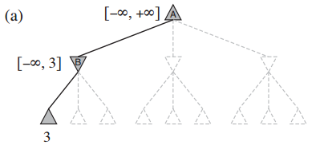
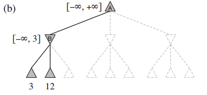
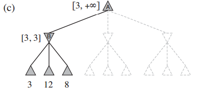
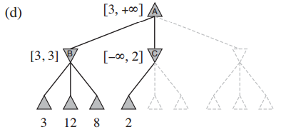
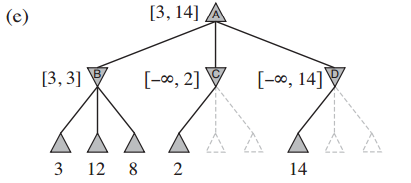
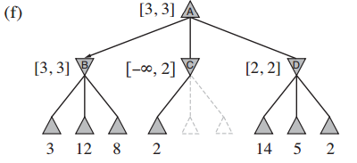

What is alpha-beta pruning algorithm?
As we said before, the disadvantage of minimax search always needs to traverse the whole game tree. So, the number of game states minimax search has to examine is exponential in the depth of the tree. Unfortunately, we can’t eliminate the exponent, but it turns out we can effectively cut it in half. The trick is that it is possible to compute the correct minimax decision without looking at every node in the game tree. The particular technique we examine is called alpha–beta pruning. When applied to a standard minimax tree, it returns the same move as minimax would, but prunes away branches that cannot possibly influence the final decision.
Different from the minimax algorithm nodes, nodes in alpha-beta pruning algorithms will be assigned two values --- $$\alpha$$ value and $$\beta$$ value. α value is the lower bound utility value that can be found so far and β value is the upper bound utility value that can be found so far.
For MAX, if one subtree contains value v that is lower than MAX’s $$\alpha$$ value, then this subtree will have the utility no greater than $$\alpha$$ value. In this case, alpha-beta pruning algorithm will prune this branch. For MIN, the algorithm will prune the branch that has the utility value v > $$\beta$$ value.
When first explore the node, initialize its $$\alpha$$ value to $$-\infty$$ and its $$\beta$$ value to $$\infty$$. Starting from node A, use DFS to search down the tree. The first successor under node B is 3. So, now node B, as a MIN, has the value at most 3 ($$\beta_B$$ = 3).

Continue the DFS, the second successor under node B has the value 12. As a MIN, node B won’t choose this move. So, node B is still at most 3.

The third successor under node B has value 8. Node B will still avoid this move. So, the value of B is still at most 3. At this point, all the possible successors of B are explored. Now node B’s value is sure to be 3 ($$\alpha_B$$ = 3, $$\beta_B$$ = 3). Node A now has a value that is at least 3 ($$\alpha_A$$ = 3).

Continue the DFS, the first successor of node C has value of 2. The value of C now is at most 2 ($$\beta_C$$ = 2) which is lower than $$\alpha_A$$. Node A, as a MAX, will definitely avoid move to C. So, there’s no need to keep search the successor of node C. The algorithm will prune the remaining branches under node C.

Now the algorithm explores node D. The first successor of D is 14. Set $$\beta_D$$ = 14. Since node D’s value now is at most 14 and is higher than node A’s current best move, the algorithm will set 14 to the upper bound of A to 14 ($$\beta_A$$ = 14) and continue exploring.

After keep exploring the successors of D and updating the value of D as a MIN. Now node D’s utility value is exactly 2 ($$\alpha_D$$ = 2, $$\beta_D$$ = 2) which is not the best choice now. So, node A will choose the move to B and its utility value is exactly 3 ($$\alpha_A$$ = 3, $$\beta_A$$ = 3).
